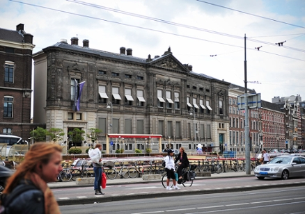

Over het museum
Het Allard Pierson Museum bestaat al sinds 1934 als onderdeel van de Universiteit van Amsterdam en is gehuisvest in het voormalige hoofdgebouw van De Nederlandsche Bank.

Geschiedenis van het museum
Het Allard Pierson Museum, het archeologie museum van de Universiteit van Amsterdam, is genoemd naar Allard Pierson (1831-1896), die in 1877 de eerste hoogleraar archeologie aan de Universiteit van Amsterdam werd. De geschiedenis van het Allard Pierson Museum start echter formeel in 1934.
Allard Pierson
De naam van het Allard Pierson Museum is ontleend aan de eerste professor Klassieke Archeologie aan de Universiteit van Amsterdam, Allard Pierson. Deze voormalig predikant werd in 1877 uitgenodigd de leerstoel Kunstgeschiedenis en Moderne Letteren te bekleden. Hoewel hij een kleine verzameling gipsafgietsels aanlegde, was er van een echt museum nog geen sprake.
Professor J. Six en de Allard Pierson Stichting
De tweede hoogleraar die archeologie onderwees aan de universiteit, was J. Six. Hij beschikte over een grote verzameling boeken en antieke voorwerpen die hij gebruikte voor het onderwijs. Toen hij in 1926 overleed, werd de Allard Pierson Stichting opgericht om deze collecties voor de Universiteit te behouden. Vanaf 1931 diende de zolder van het Instituut voor Mediterrane Archeologie aan de Weesperzijde als 'museum'.
De collectie Scheurleer
De Haagse bankier Lunsingh Scheurleer werd in 1929 het slachtoffer van de economische crisis en moest de collectie van zijn museum verkopen. Het Museum Scheurleer was reeds in 1924 ontstaan in Den Haag en was een privÈ-initiatief van C.W. Lunsingh- Scheurleer. De Allard Pierson Stichting kocht de verzameling aan en schonk deze vervolgens aan de Universiteit van Amsterdam, onder de voorwaarde dat de collectie voor het publiek open zou worden. Zo werd op 12 november 1934 het Allard Pierson Museum opgericht, gehuisvest aan de Sarphatistraat.
Start aan de Sarphatistraat
In 1934 werd prof. dr. G.A.S. Snijder de eerste directeur van het Allard Pierson Museum. Snijder collaboreerde in de bezettingsjaren opzichtig met de Duitse bezetter en werd daarvoor ook veroordeeld tot een gevangenisstraf. Na de oorlog werd prof. dr. Emily Haspels benoemd tot directeur. Onder haar leiding groeide de studiecollectie en was het museum gehuisvest aan de Sarphatistraat waar het vooral als studiecollectie dienst deed. Interieur Allard Pierson aan de Sarphatistraat De inrichting van het Allard Pierson aan de Sarphatistraat kwam tot stand in de jaren veertig. Gehuisvest in een oud schoolgebouw was het uitgangspunt dat een museuminrichting nooit de voorwerpen mocht overheersen. Wel moesten museum en vitrine de voorwerpen bescherming bieden.
Naar de Oude Turfmarkt
Vele schenkingen en bruiklenen hebben sindsdien de collectie verrijkt. Met name onder de directeur prof. dr. J.M. Hemelrijk slaagde men erin belangrijke voorwerpen en verzamelingen te verwerven. Een nieuw gebouw werd absoluut noodzakelijk. HKH Prinses Beatrix opende in 1976 de nieuwe behuizing in het oude gebouw van de Nederlandsche Bank aan de Oude Turfmarkt. Vele tentoonstellingen hebben sindsdien voor naamsbekendheid van het museum gezorgd. Belangrijke publiekstrekkers waren onder andere De Etrusken, Kreta, Bakermat van Europa, Marmer in beeld, Mensen, Mythen en Muziek, Jong in de Oudheid, Aan Tafel! en Kleur!
UvA Erfgoed
In 1986 trad prof. dr. H. Brijder aan als directeur-hoogleraar. Sinds 1994 konden de tentoonstellingen gehouden worden in een nieuwe, permanent beschikbare vleugel. Tot 1999 viel het museum onder de vakgroep mediterrane archeologie van de Faculteit Geesteswetenschappen. Vanaf 1999 werd het museum organisatorisch onderdeel van de Universiteitsbibliotheek en in 2007 werd UvA Erfgoed opgericht waarbinnen alle Erfgoedcollecties worden beheerd - waarvan het Allard Pierson Museum en Bijzondere Collecties de belangrijkste zijn. In 2002 werd dr. R. Lunsingh Scheurleer benoemd als de nieuwe directeur. Na zijn pensionering in 2009 werd dr. Wim Hupperetz benoemd als directeur. In 2016 werd hij benoemd als bijzonder hoogleraar aan de Vrije Universiteit.